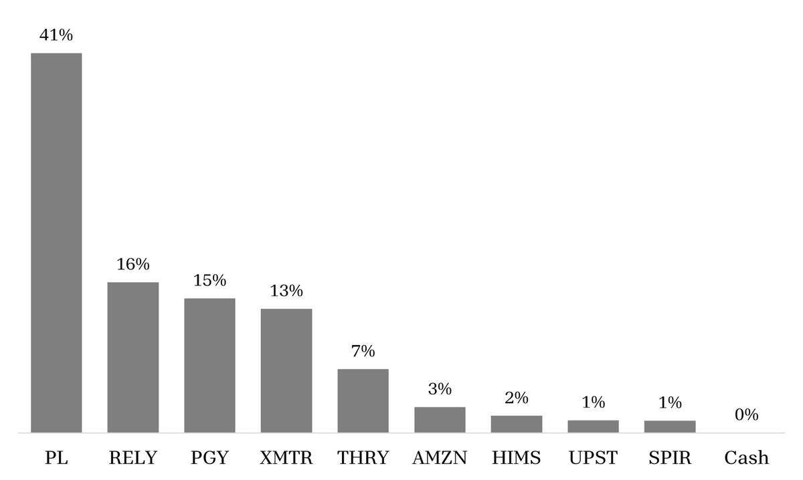

2025 Annual Letter
Calendar year returns
| Period | Portfolio | SPY | QQQ |
|---|---|---|---|
| 2022 | -32.1% | -18.2% | -32.6% |
| 2023 | 24.6% | 26.2% | 54.9% |
| 2024 | 73.2% | 24.9% | 25.6% |
| 2025 | 98.9% | 17.7% | 20.8% |
| Cumulative since inception | 191.5% | 51.8% | 58.4% |
| Annualized since inception | 30.7% | 11.0% | 12.2% |
Portfolio return is the time-weighted return for all investment accounts, calculated by Fidelity as of December 31, 2025. SPY and QQQ returns are from Yahoo Finance.
Current portfolio

A concentrated portfolio has its pros and cons, and 2025 saw the pros on full display. Pagaya proved its economic model and took significant strides expanding its lending network. Xometry reached positive cash flow and continued to build the largest network of manufacturing buyers and suppliers globally. And Planet delivered a few big deals, accelerating top-line growth, and positive free cash flow, which was more than enough for the market to up the bid.
One year’s results are hardly an accurate reflection of the scoreboard. Stock prices today move faster and more aggressively than ever, both to the upside and downside. Planet is the poster child of this dynamic. After a few years in SPAC jail, the stock rose almost 400% last year, the price becoming the topic du jour in my investment circle.
What do I think? I think the calculus looks a lot different at 22x revenue than 2x revenue. I think we’ve seen a huge chunk of returns in a very short period. I think the market was too pessimistic before, and maybe too optimistic today. Today, everyone buys the space stock glory, views Planet as an AI winner, and has high confidence in the company’s ability to capture a large market.
I’ve been thinking along those lines for a few years and think Planet is a generational business. But price is important, and the current price calls for a reassessment of the argument. Nothing is a guarantee in this game, which presents a challenging question: do I sell a winner, a company I still believe in for the long run, strictly because of valuation?
History, and Charlie Munger, would argue that’s the wrong move. “Get in a great business, and stay there.” Great businesses tend to stay overvalued precisely because they are great. Stanley Druckenmiller might counter that the relevant competition is “the opportunity set,” and if the opportunity set looks more attractive elsewhere, it’s probably time to make a move.
Druck’s game is not my game – trading, timing the market and such – but I do believe in being opportunistic. At times, that can mean shortening my time horizon; an excessive price can be just as damaging to long run results as selling too early, and while my confidence in Planet’s business and prospects has strengthened over the past year, my argument has diminished. I expect lower returns looking forward, but I still want outsized exposure over the long run.
I sold a portion of my stake in the company earlier this year and added to my investments in Pagaya, Remitly, Thryv, and Hims and Hers. Planet is still my largest position, and this was far from a radical change. I just think it makes sense to take some chips off the table at such high prices.
On the topic of Planet
I’ve long written about my ideas of Planet, but it might surprise you to learn that I think tasking satellite imagery is not a good business for the long run. It is a transactional business model at heart, built for the satellite imagery industry of the 2000s and 2010s where a few buyers dominated the landscape, not the geospatial industry of the future where disparate sources come together to provide an integrated, scalable solution to many customers’ problems.
Standalone tasking faces higher levels of new entrants and substitute products than years past. Drones, increasingly mobile and deployable in theater, threaten to steal share of certain use cases. SAR satellites, increasing in quantity and capability, can also be a substitute (but also a complement). Marketplaces like SkyFi threaten to disintermediate the customer relationship and commoditize supply. But the overarching problem is simple: when a customer knows where to look, there are a variety of ways to obtain an answer to their question.
Tasking, I believe, is destined to become a bundled feature, not a standalone product or platform. This is a long duration evolution unlikely to happen in the next few years, but I suspect it is the inevitable endgame. That view does not disrupt my investment in Planet because the company’s core differentiation and competitive advantage flows from the daily scan.
The market is highly focused on Planet’s new satellite system wins in Germany, Japan, and Sweden, and rightly so – these are big deals. But I think the specific point of focus is misplaced. Buried in each press release is a disclosure that these nations are also buying large PlanetScope analytic feeds. These wins are important to fund and accelerate the expansion of Planet’s Pelican fleet – better positioning the company to capture the largest pool of demand today – but the bigger deal is everyone buying the bundle. Dedicated tasking capacity (or satellite ownership, it all means the same thing, just comes from different budgets) is just one feature of the bundle. What is most economically valuable to Planet in the long run is inserting infrastructure into customer workflows, and that is a product of the daily scan.
Ultimately, I believe the daily scan is where most value will accrue. When customers subscribe to monitor an area of the Earth, they build pipelines and models on top of that stack to directly enable a workflow. It becomes operational infrastructure, something customers are unlikely to rip out and have to re-build those pipelines and re-train those models.
I own Planet because I believe they are building a database business, not selling satellites or imagery, and the long-term economics will reflect that reality. Unlike most satellite imagery companies, the daily scan is infinitely scalable, imaging the same area every day regardless of customer demand, and distributing that data at zero marginal (and opportunity) cost.
The daily scan provides developers with infrastructure to build and scale globally, the context required to incorporate business logic, and the rapid refresh rate to fit a real-life workflow. The unique cadence and coverage also serves as a reference layer for complementary sensor fusion, the core building block for solution development. And solutions are how the market will grow.
Planet is the only company to image the entire Earth every day and has been for nearly a decade. I believe they are becoming the default system of record for monitoring the Earth, and whoever holds that position stands to win a huge amount of economic power. It will just take more time than most people expect.
Organizing by Time Horizon
Investors commonly style themselves as “value” or “growth” or “quality” investors. I don’t subscribe to any label other than the long term, but long term can also be variable. It could be three years, five years, ten years, or anything really. So, to better understand the nature of my investments, I organize my portfolio by time horizon.
My advantage is duration, so my work is naturally biased towards companies I want to own forever. That kind of time horizon may seem abstract, and it doesn’t mean I will own them forever; it means I have no defined expectation about when to realize value and am content to be a silent partner in these companies’ progression. This “infinite” bucket is the soul of my portfolio: Planet, Xometry, Pagaya, Amazon, and Upstart. I believe these businesses are uniquely durable and possess structural advantages that allow them to escape competition as they scale.
On the other end of the spectrum sit “situational” bets. Thryv is the sole tenant in this bucket. Here, my argument is over price, and my time horizon is typically five years or less. Valid questions may surround the quality or durability of the business, but expectations are low, and I believe the company can beat those expectations. The bet is on near-term execution and reversion to the mean, a riskier place to operate without the cushion of time horizon.
Somewhere in the middle are “exploratory” investments. These tend to have a private equity-like time horizon, where I’m more comfortable with duration but am still unsure if it is a place I want to park capital for decades. I have some conviction in these businesses, but need to do more work and would like to monitor the situation before committing more capital. Remitly, Hims and Hers, and Spire Global live in this part of the book. While continued fundamental progress can move some names up the chain, I am quicker to sell if the story changes, the price becomes more attractive, or a better opportunity emerges.
Classifying my investments into these buckets helps me think clearly and ultimately size each position. I don’t have any strict rules as to the allocation between buckets, but I want most of my money in the infinite bucket, where my advantage is strongest.
Why Thryv?
Thryv is my only situational play today, and it’s been a painful one. It begs a valid question: if I’m optimizing for time horizon, why invest in a business of clearly questionable durability?
Every sensible investment starts with a belief that you are buying future cash flows at a discounted price from their worth. Most of my investments are duration plays: I am buying cash flows in the distant future, based on an argument about the durability of the business. Thryv is a different story. I own it because I think the market is mispricing the immediate cash flows, and I have confidence in management.
To be clear, this is not some mission-critical vertical software business. It’s a marketing tool, a fairly undifferentiated product selling into a high churn end market, with slow organic growth and the looming threat of AI ahead. Still, the valuation is hard to reconcile; the company should produce more cash in the next five years than the current enterprise value.
The bet is simple: if Thryv can get reasonably close to its 2030 ambition of $1 billion in SaaS revenue, the equity has room for something on the order of an 8x return. $800 million of SaaS revenue in 2030 requires a ~12% CAGR from 2025. The math works if cash flow takes down the debt, and the pure SaaS business reaches a 2x revenue multiple (or roughly 10% free cash flow yield for a business that should run 20% margins, without the egregious stock-based compensation at many other software companies). I don’t think that’s a far-fetched outcome, and that type of potential reward justifies taking some risk.
There are a few things I like about Thryv. The first and most important is Joe Walsh. He is an Act 4 entrepreneur who built and exited multiple businesses, successfully navigated similar business model transitions, and is maniacally focused on execution. He is a skilled operator with real skin in the game, none of which makes the thesis true, but offers some confidence in the decision making behind the scenes.
Second, I think they are making the right strategic moves. Growing up-market, without entering the domain of HubSpot, makes sense. A million dollar business is much more valuable, and stable, than a $500,000 business with 2 or 3 employees. The CAC/LTV dynamics in the very small business segment are structurally challenging, but Thryv has escaped them to date given their focus on converting legacy customers. As they fully cannibalize the legacy business, the value of a large distributed sales force will become more clear, especially with a more capable product.
Over the last few years, Thryv has built out a fuller platform and added vertical-specific tooling and automation (via Keap). It recently launched a specialized HVAC and Home Services solution to support this move up-market. They are returning to their DNA – helping small businesses market their business – while adding functionality for larger businesses with more complex needs. Again, none of this guarantees success, but it raises the probability of a good outcome.
On the AI front, Thryv’s core customer is a buyer, not a builder. I see little risk of thousands of service business owners developing their own marketing automations from scratch; they are more likely to use a tool they already know. The company is thoughtfully implementing AI in pockets of its product (content generation, auto-reviews, etc.), and the new CTO hire should accelerate these efforts. In the near term, I expect AI to accelerate product velocity and form more of a tailwind than headwind; over the longer-term, it remains a bigger question mark.
Organic growth is another common cause for concern. Excluding Keap and the conversion of legacy customers, the company has reported sluggish top-line growth. This analysis misses the point, however; the entire strategy over the last few years has been to convert legacy customers at no cost, get them actively using the SaaS product, and upsell the ones who stay over time. You can’t exclude that growth contribution from the total because it is the focal point of the strategy! I am less concerned about this point, at least for now, but it is worth active monitoring.
In all, I don’t think you have to believe much, and leadership has earned some credibility. It’s a transitioning organization, still in the process of cannibalizing the old business in service of the new; the numbers may not move smoothly, but the transformation is progressing. I would be shocked, and pleasantly surprised, if I still own Thryv in five years, but the business is not dead. There is still some money to be made.
A Note on Remitly
Remitly is the other portfolio addition from last year. The business has steadily taken share in remittances for more than a decade, and I have yet to hear a convincing argument for why that changes. The category is huge, throwing off tens of billions in revenue each year, and still evolving towards digital means, giving Remitly a long runway for continued growth.
There is no lack of competition, but it is generally weak. Legacy players like Western Union are burdened by the declining value of retail storefronts, and sub-scale digital challengers struggle to match Remitly's coverage and marketing efficiency. Wise is the most dangerous operator as Remitly looks to double down on high amount senders, but the industry is more than capable of supporting two leaders. Just look at the co-existence of Expedia and Booking.com.
The key question surrounds Remitly’s ability to turn share wins into profits. The economics are generally intuitive: Remitly acquires customers via Google and Facebook and earns a fixed fee and FX spread on each transfer, relying on repeat transactions to justify the upfront spend. A new customer typically generates gross profit in excess of the upfront cost in the first year and remains active for years, producing the 6x LTV/CAC the business has maintained to date.
Scale benefits follow naturally. With higher volumes, Remitly can negotiate better rates with payout partners, spread fixed compliance and engineering costs over more transactions, and improve risk and pricing models. The path to 20%-plus operating margins seems credible and not overly dependent on pricing power.
Stablecoins are a headline technology risk, but really a technical enabler promising faster and cheaper payments. For Remitly, I view the most likely outcome as lower costs, which can either be passed onto customers or retained as margin. People don’t spend stablecoins today; the last mile fiat conversion is not going anywhere anytime soon, and shifts in payment behavior happen over decades, not years. Stablecoins also don’t solve distribution and compliance requirements; they are ultimately a back-end optimization to improve speed and economics. I expect their value to be broadly distributed across the industry and ultimately captured by customers, with the core economic model remaining intact.
For most of its history, Remitly has been a one product company. Recently, it has broadened its scope, creating an additional leg to the thesis. I think Remitly has earned the right to offer a broader suite of financial services to its customers, and it will have more success than expected monetizing some of these newer products over time, with interchange a particularly attractive revenue stream long term. This is all pure optionality based on the current price, but the strategic logic is sound, and the right to win is reasonable; it at least deserves a mention.
Remitly is capable of sustaining a mid-teens or higher growth rate while steadily expanding margins. The price doesn’t ask much, and it is beginning to show a clear focus on profits. Modest execution gives you a business earning well in excess of the current multiple, while the bear case means a structural break in a trend that has persisted for a decade. This is a company I suspect will improve over time, not deteriorate.
The Others
I’m already running a bit long, so if you’d like to read about Pagaya or Xometry, I recommend this article. I thought Upstart’s AI day was a fantastic explanation of how the company is developing a unique competitive advantage in consumer lending. I think Hims is a complex story of which my opinion is evolving, but I still need to do more work. I’ve written about Spire Global in the past (check the archives) but am waiting for more consistent reporting and some demonstrable progress to make any additional decisions there.
The Opportunity
With market forces overwhelmingly focused on the short-term, the opportunity has never been greater for those with patient capital and the capacity to think long term. AI will never replace human judgment, and I am convinced the opportunity for fundamentally-minded, long-term investors has never been better. I look forward to playing this game for many decades to come and hope you stay tuned.
Thanks for reading. Feel free to reach out with any questions or topics you’d like to discuss.
– Tim Gallagher